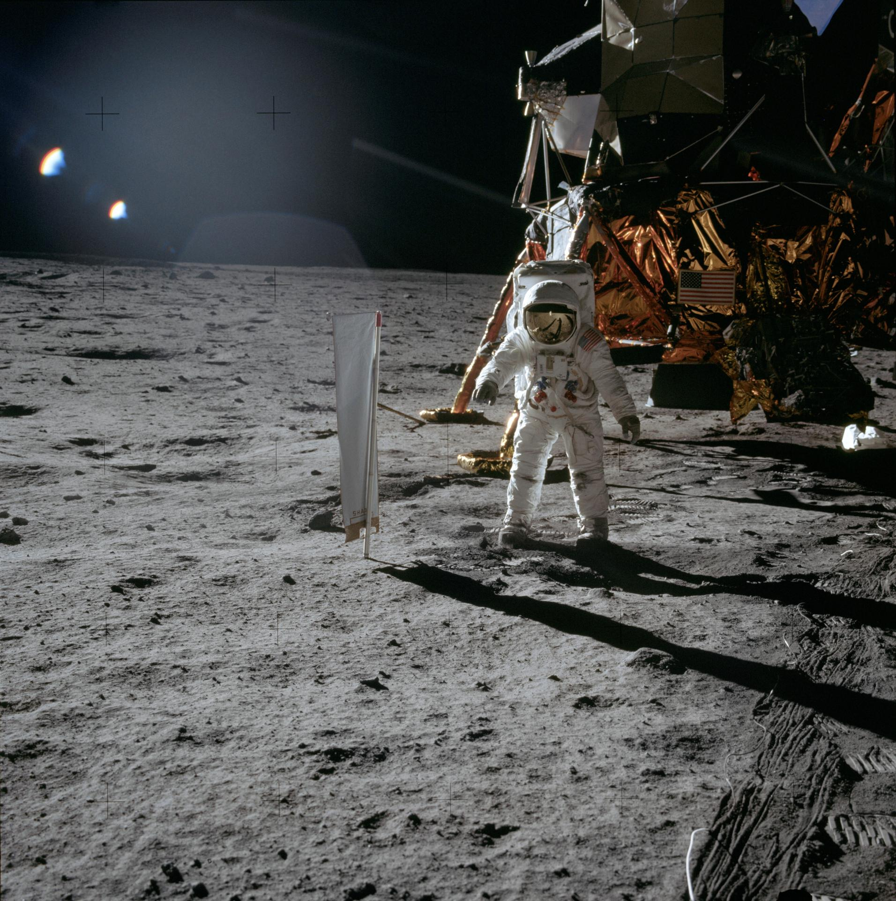
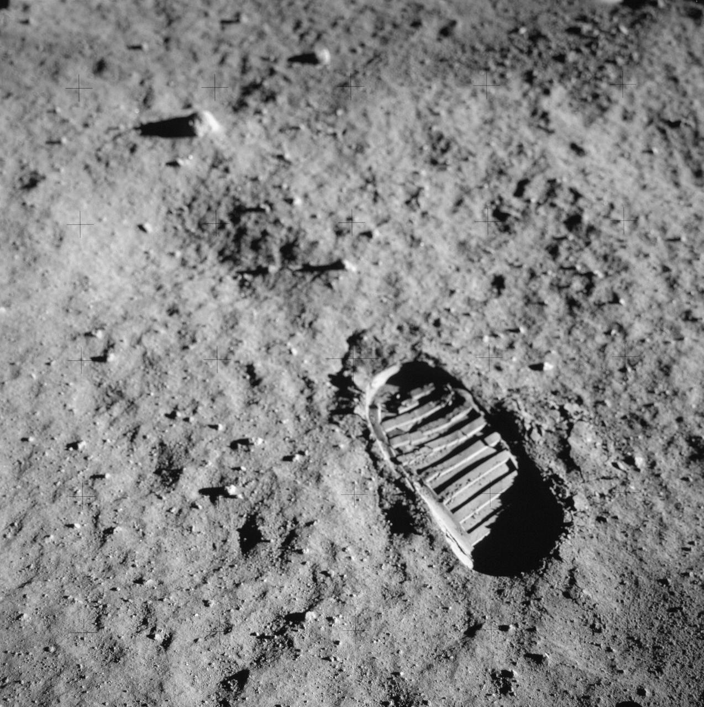
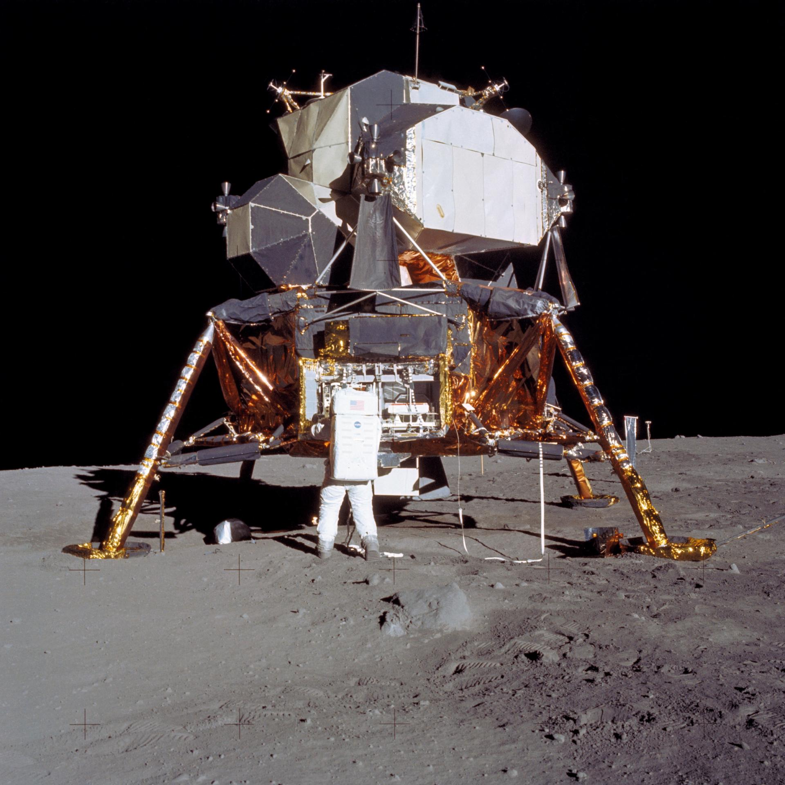
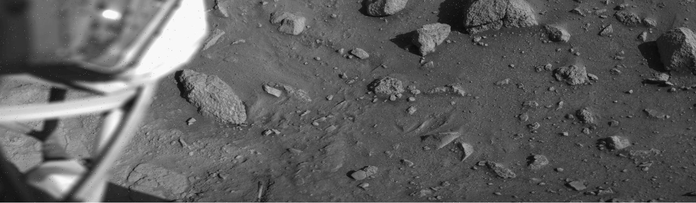
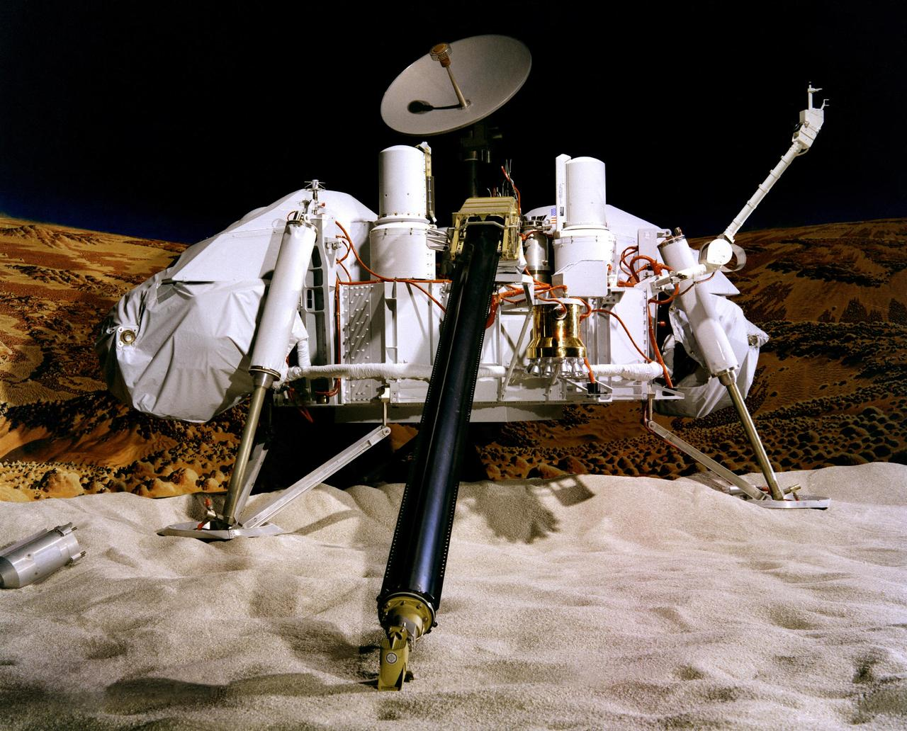
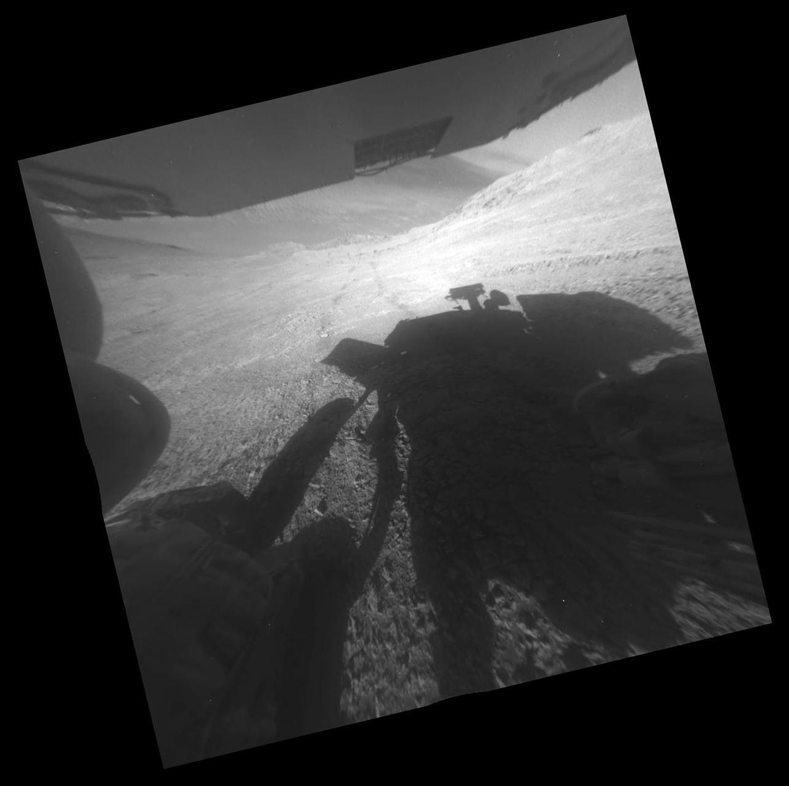
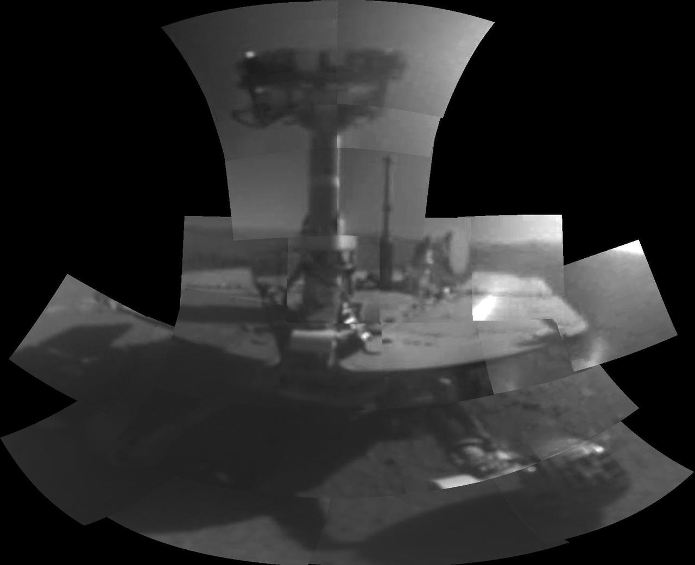
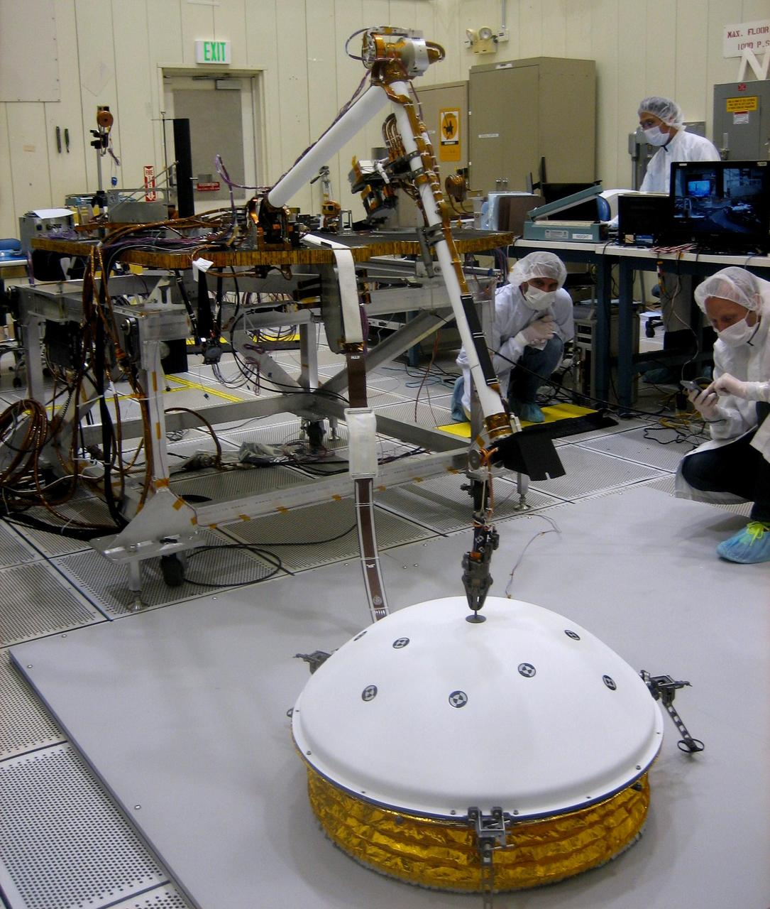
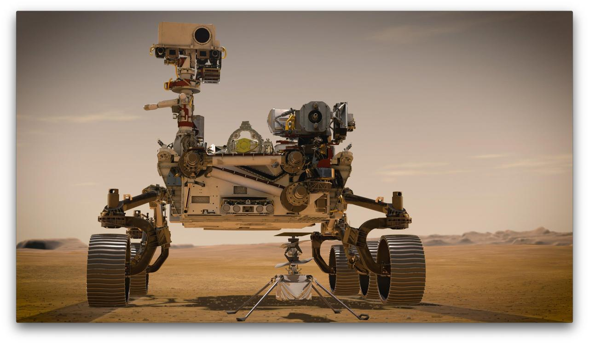
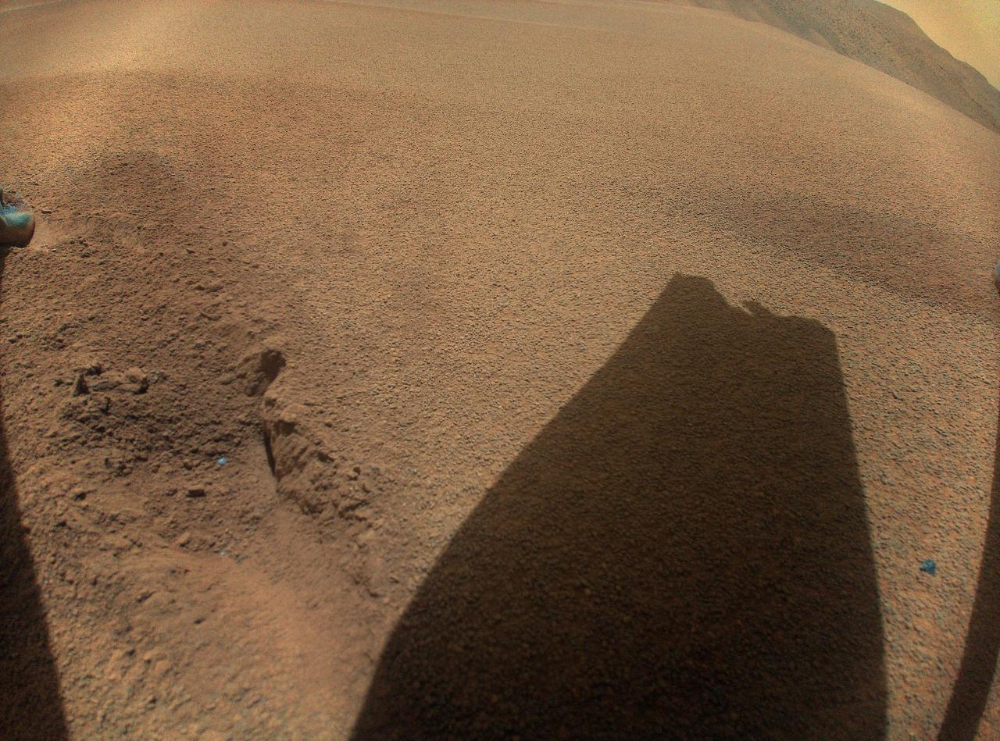

Diaries of the
Abandoned.
Over 190 tons of human ingenuity rest motionless in the silence of the Moon and Mars. These are not relics of failure — they are humanity's first monuments on worlds beyond our own. Step onto their landing sites, inspect their 3D engineering, and listen to the science they left behind.
Apollo 11 Lunar Module



- Surface Stay21 h 36 m
- Landing Site0.6875° N, 23.4333° E
Why do footprints last forever? The Moon has no atmosphere — no wind, no rain, and no weather erosion! These historic bootprints will remain visible for over 10 million years.
Laser Reflectors: Apollo 11 left a panel of corner-cube mirrors. Observatories on Earth still shoot green lasers at them today to measure the distance to the Moon within millimeters!
Viking 1 Lander



- Active Lifespan2,245 sols
- Landing Site22.27° N, 47.95° W
Why is Mars Red? Mars is literally covered in rust! Iron minerals in the surface rocks oxidized over billions of years, creating red iron-oxide dust that coats the entire planet.
Salmon-Pink Skies: While Earth's sky is blue because gas molecules scatter sunlight, Mars's thin sky is salmon-pink because fine rust dust particles stay suspended in the atmosphere.
Opportunity Rover (MER-B)

- Mission Duration5,111 sols (56x Goal)
- Odometer Record45.16 km
Martian Blueberries: Opportunity discovered tiny hematite spheres just a few millimeters across. On Earth, these only form when mineral-rich water soaks through rock!
Dust Storms: Martian dust storms can grow large enough to encircle the entire planet, blocking 99% of sunlight from reaching solar panels.
InSight Lander


- Marsquakes Heard1,300+ Tremors
- Landing Site4.50° N, 135.62° E
Marsquakes: Earth quakes because tectonic plates crash into each other. Mars quakes because the planet is slowly cooling and contracting, cracking its crust!
Super Hearing: InSight's SEIS instrument could measure ground vibrations smaller than the radius of a single hydrogen atom.
Ingenuity Mars Helicopter


- Flight Log72 Flights • 17 km Flown
- Landing Airfield18.44° N, 77.45° E
Flying in 1% Air: Mars atmosphere is less than 1% as dense as Earth's! Ingenuity's carbon-fiber blades spin five times faster than an Earth helicopter just to generate enough lift.
Autonomous Pilot: Radio signals take 5 to 20 minutes to travel from Earth to Mars, so nobody could fly Ingenuity with a joystick. The helicopter flew entirely on its own autopilot!
Not Trash. Archaeology.
These machines will remain on the Moon and Mars for thousands, perhaps millions of years. When future generations build permanent outposts across the solar system, these historic landing sites will be preserved as the first cultural monuments of humanity's expansion beyond Earth.
"To be abandoned is not to be forgotten."